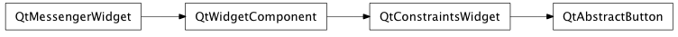

Bases: enaml.widgets.constraints_widget.ConstraintsWidget
A base class which provides functionality common for several button-like widgets.
The text to use as the button’s label.
The icon to use for the button. The size to use for the icon.
Whether or not the button is checkable. The default is False.
Whether a checkable button is currently checked.
Fired when the button is pressed then released. The payload will be the current checked state.
Fired when a checkable button is toggled. The payload will be the current checked state.
How strongly a component hugs it’s contents’ width. Buttons hug their contents’ width weakly by default.
Returns the snapshot for an abstract button.
Bind the change handlers for an abstract button.
Handle the ‘clicked’ action from the UI widget.
The content will contain the current checked state.
Handle the ‘toggled’ action from the UI widget.
The payload will contain the current checked state.
alias of __NoInterface__

Bases: enaml.qt.qt_constraints_widget.QtConstraintsWidget
A Qt implementation of the Enaml AbstractButton class.
This class can serve as a base class for widgets that implement button behavior such as CheckBox, RadioButton and PushButtons. It is not meant to be used directly.
This method must be implemented by subclasses to create the proper button widget.
Create and initialize the abstract button widget.
The signal handler for the ‘clicked’ signal.
The signal handler for the ‘toggled’ signal.
Handle the ‘set_checked’ action from the Enaml widget.
Handle the ‘set_text’ action from the Enaml widget.
Handle the ‘set_icon_size’ action from the Enaml widget.
Sets whether or not the widget is checkable.
Sets the widget’s checked state with the provided value.
Sets the widget’s text with the provided value.
Sets the widget’s icon to the provided image.
Sets the widget’s icon size to the provided size.